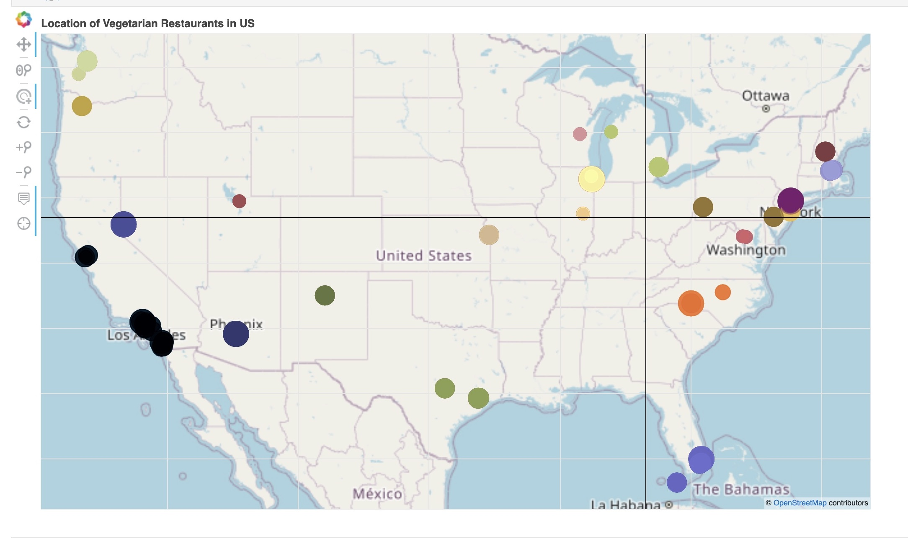

Statistical and Data Sciences - Smith College (2022)

New York City, one of the largest and most iconic urban centers in the world, faces significant challenges in managing its rodent population. Effective rodent control is crucial to alleviating the spread of diseases, reducing property damage, improving waste management, and avoiding food contamination. The city serves as a critical case study for addressing urban pest control, highlighting the importance of comprehensive strategies and insights. To support this effort, we aim to provide a Plotly Dash dashboard that offers valuable insights into the patterns, trends, and potential contributing factors of rodent activity.
The Jupyter Notebook for this project can be found here.
The data for this project comes from two primary sources: the Rodent Inspection dataset provided by the Department of Health and Mental Hygiene (DOHMH) and the Primary Land Use Tax Lot Output (PLUTO) dataset by the Department of City Planning. The DOHMH dataset records initial and compliance inspections for rodent activity across New York City, tracking inspection results such as active rat signs, conditions conducive to rats, and whether inspections were passed or failed. It includes detailed location data, such as coordinates, neighborhoods, boroughs, and property information. Additionally, the data is updated daily, enabling real-time monitoring of rodent control efforts. The analysis focuses on the timeframe from January 1, 2023, to December 31, 2023.
The questions we tried to answer through our analysis are: